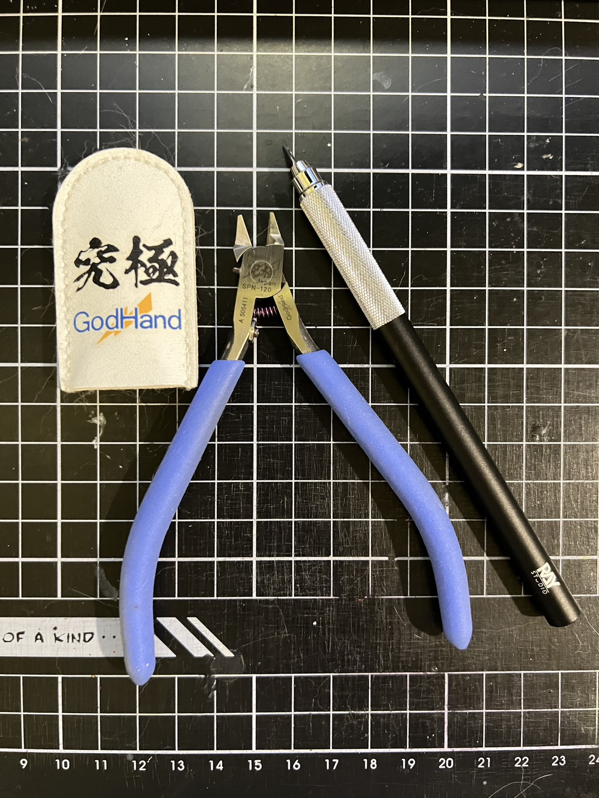
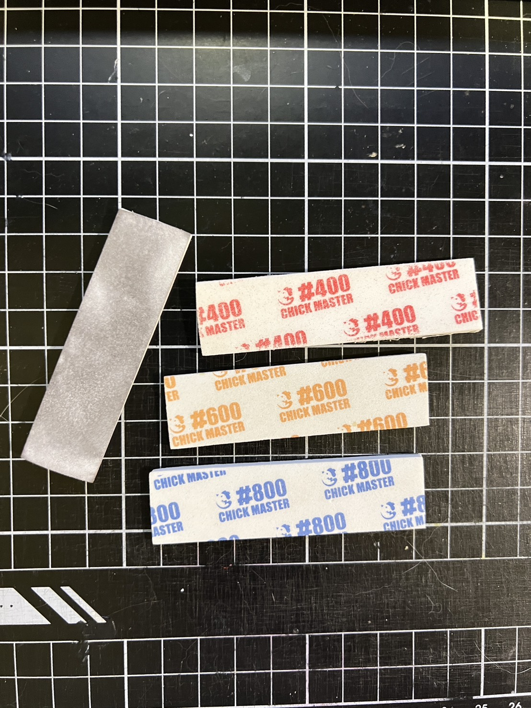
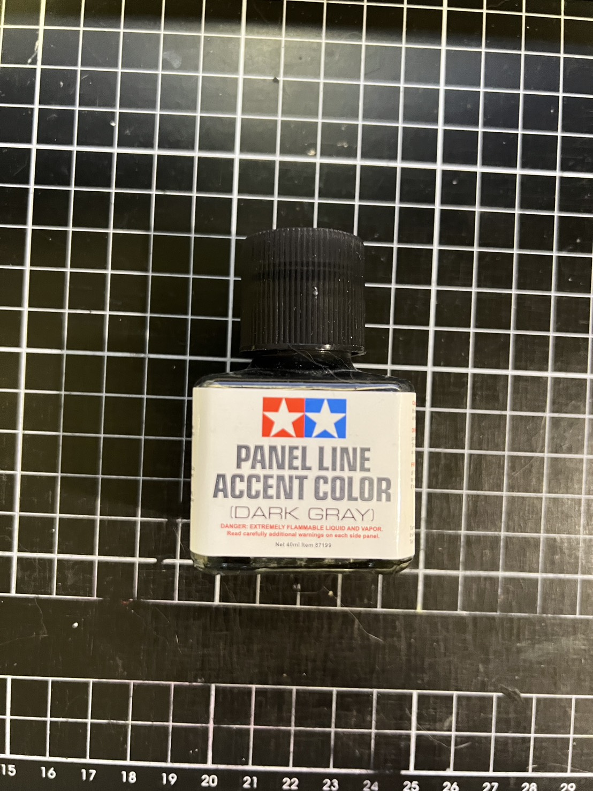
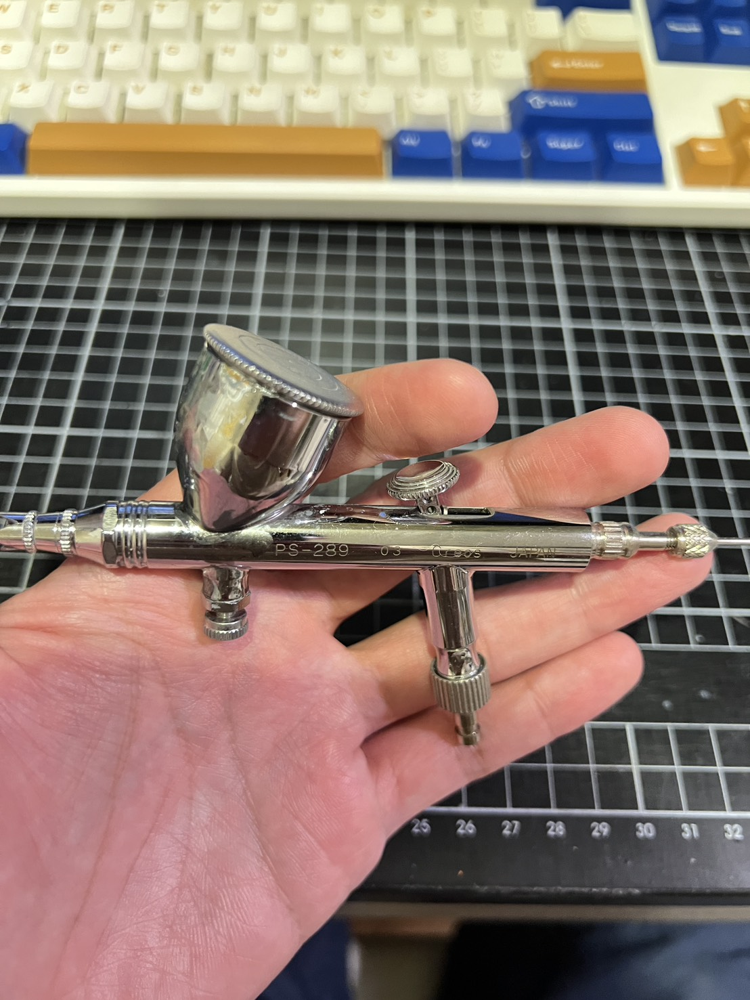
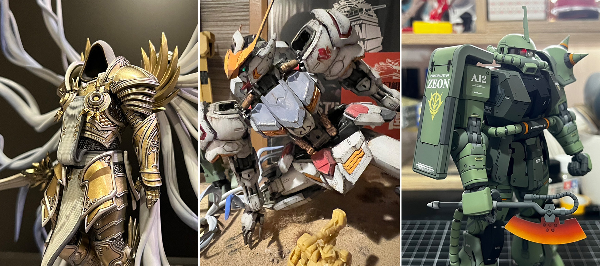
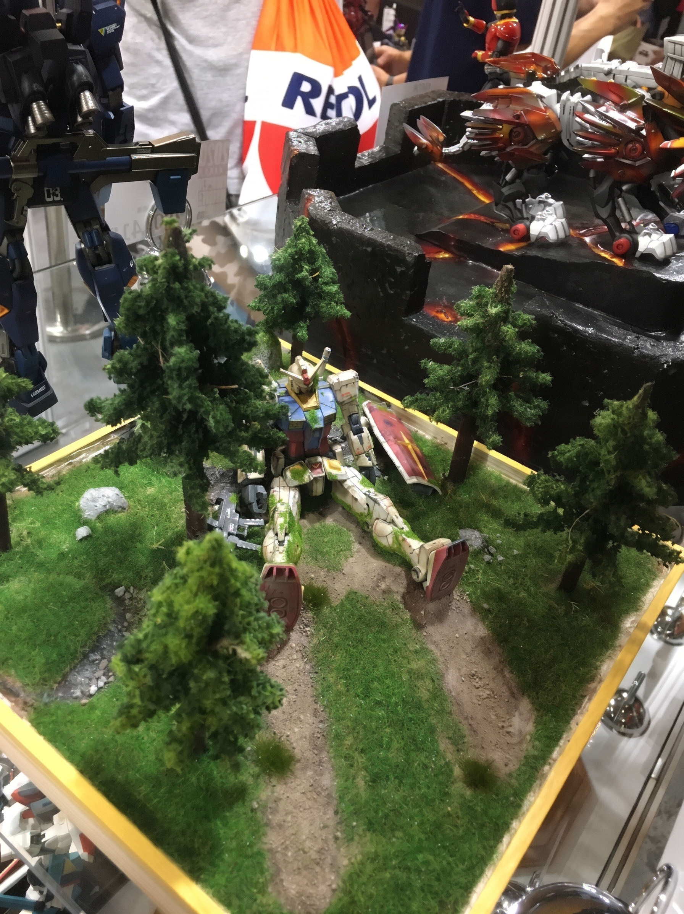
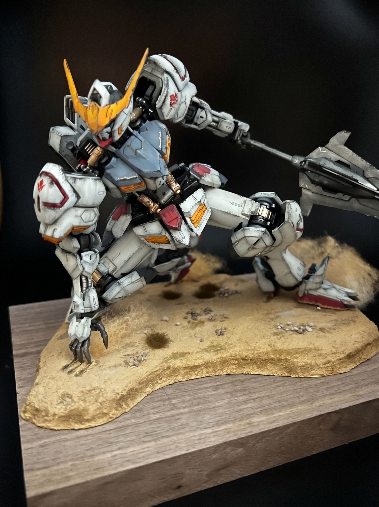
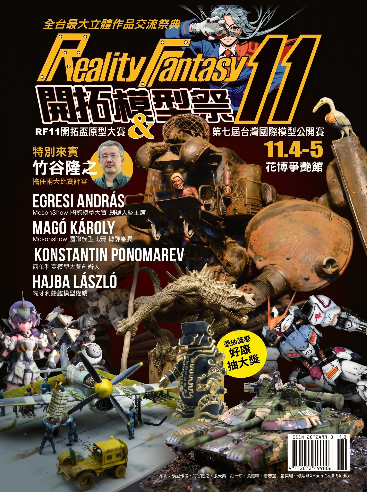

組模型的契機
一直以來，我對於需要動手製作、組裝的東西都滿有興趣。某次去日本旅遊時，剛好看到模型，就順手帶了兩盒回來。那時候其實完全不了解這些機體叫什麼，甚至不知道它們背後是哪一部動畫作品。
當時的想法其實很單純，就只是覺得：「好像滿好玩的，想動手做點東西。」
沒想到，這個單純的念頭，後來慢慢變成了一項自己持續投入，也真正學會了一些東西的興趣。
學習歷程
剛接觸模型時，最先開始製作的是鋼彈（GUNPLA）。
一開始其實很單純，就是按照說明書的步驟，把一個個零件組裝起來。但做了一段時間後，我開始覺得只是把它組起來好像還不太夠。看著網路上其他玩家製作的作品，才發現原來同樣是一盒模型，每個人最後做出來的樣子可以有這麼大的差異。從基礎的處理水口改善零件的平滑度、滲入墨線增加零件俐落感到進階點進一步進行完整的塗裝與改造。
原本只是想把模型組起來的我，也因此開始好奇：「那我是不是也可以把它做得更好？」
於是便開始透過網路查資料、看教學，慢慢摸索各種模型製作的方法。從最基礎的斜口鉗、筆刀、砂紙，到墨線、水貼、保護漆，再到後來接觸的刻線刀、噴筆、空壓機以及各種漆料，工具也在不知不覺中越買越多。而模型對我來說，也逐漸從單純的「組裝」變成了一件需要學習與練習的事情。
入門
將零件從板件上取下來時需要使用到斜口鉗，並透過兩段式水口的剪法以減少塑料白化的風險，取下零件剪除水口後可能還會有微小的斷差，此時可以再透過砂紙進行打磨削平，這樣一來就能得到一塊平整沒有毛邊的零件！
若想模型看起來比較有細節，這時就可以用到墨線將墨水滲入零件上設計的間隙，將陰影凸顯出來。
模型中附的貼紙多半是膠貼，視覺效果上會過厚，看起來不像是機甲上所彩繪的圖案，所以可以另外購買水貼紙；這種貼紙就類似紋身貼紙，需泡水軟化後將圖案層撥離下來貼到零件上。
等以上步驟完成後就可以上最後一步驟：保護漆，保護漆可以依個人喜好挑選亮光、消光、半消光等不同效果。
| 斜口鉗、筆刀 |  |
| 打磨海綿砂紙 |  |
| 墨線 |  |
| 噴筆 |  |
進階
上述入門做的步驟嚴格點我們通常會稱它為素組，而再更進階點就是開始自己上色，不管是筆塗或是噴塗。上色時不一定要按照原機體設定的顏色，可以照自己的審美去設計顏色分色甚至是改變視覺材質。
| 噴塗成金屬色澤。 做舊做出銹蝕水漬的效果。 燒紅加熱的效果。 |
 |
使用噴筆也有很多可以鑽研的技法，除一般平噴外還可以加強陰影，讓整體看起來更有重量感。
除了顏色的改變，也可以做些結構上的變化，將原本單調的零件透過刻線刀做出看似不同零件拼接而成的效果，讓機體更豐富。
參加模型比賽
隨著時間的投入，在模型製作也慢慢的進步，遂浮現出參賽的念頭看看其他玩家都是怎麼做的。
第一次參賽：
那時大概玩了一年左右的模型，偶然看到一家台灣品牌自辦的賽事就想說去玩玩看，當時準備的模型是初鋼（RX-78-2）搭配一個簡易的造景，這也是我第一次製作模型的造景地台，結果是沒拿到半個點。
現在回過頭看當時的製作水準真的滿多不足的部分。
 |
第二次參賽：
這賽事算是台灣較大型的模型展（開拓模型），準備的作品製作了近兩個月，雖然比起第一次的作品完成度更高，但現場其他人的作品都很厲害，所以不抱期待可以拿到評審的點數。
在擺放完作品後到處看看其他人的作品，繞一圈回來後發現自己的作品拿到點數！當下真的又驚又喜，自己的作品有受到評審的青睞！最終拿到科幻組別的入圍！
 |
 |
| 在下一屆的宣傳雜誌封面上還放了我的作品 ( 右下 )。 |
入圍或許不算什麼非常驚人的成績，但它代表了一件事情。當初只是因為「想動手做點東西」而買回來的模型，經過一次又一次的製作、學習與練習後，我已經開始能夠靠自己掌握一些製作技巧，並把學到的東西實際運用在作品上。
興趣和技能的界線，好像就是在這個過程中慢慢變得模糊的。一開始，我只是喜歡「做模型」。後來，我開始喜歡「研究怎麼把模型做得更好」。而到了現在，我更喜歡的是這個不斷學習、嘗試，然後看著自己的作品一次比一次進步的過程。或許這就是一項興趣最有趣的地方。
你永遠不知道，當初只是抱著「玩玩看」的心態開始的事情，最後會不會有一天，變成一項真正屬於自己的技能。